📖 Complete User Manual
Unified documentation covering all 14 core modules across the React Web Application and the Native Android Mobile Companion App with live demo data from the Smith family (Sarah, John, and Tom).
1. Financial Dashboard & "Safe to Spend"
Your household command center displaying live spendable liquidity, income burn velocity, connected accounts, and category metrics.
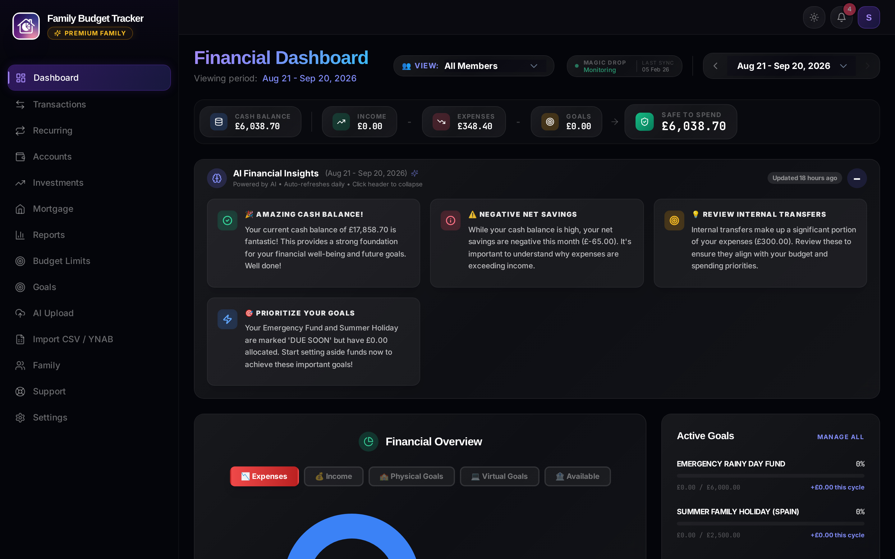

What It Does
- Displays the central Safe to Spend (S2S) gauge using the current account, bill, budget, and goal data for the selected pay cycle.
- Quick-stat overview cards: Liquid Cash Balance, Inflow Income, Expense Burn, and Allocated Savings.
- Instant family filter chip (
👥 All,👤 Sarah,👤 John) to toggle between household and individual views without layout shifts.
How It Works Under the Hood
Safe to Spend = Liquid Cash Balance − Committed Bills − Active Budget Limits − Physical Goal Reserves
Budgets align to your actual salary dates rather than calendar months. Tapping "Live Math" breaks down the exact arithmetic and contributing accounts.
How to Configure & Use
- Go to Settings → Pay Cycle Settings to set your salary schedule (Monthly, Bi-weekly, or Specific Day).
- Click or tap the Family Filter Chip to switch between personal and combined household totals.
- Use the Next / Prev buttons in the header to inspect previous or projected future cycles.
2. Transactions Feed & Smart Search
Real-time transaction ledger grouped by monthly pay cycles with running balance audits and instant search.
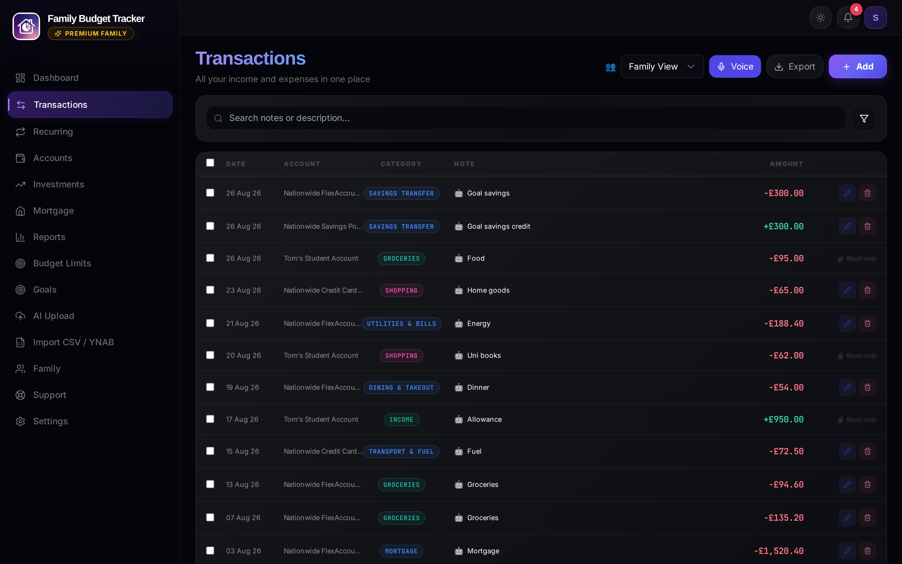

What It Does
- Live transaction feed with quick category pill filtering (Inflow, Outflow, Groceries, Dining, etc.).
- Real-time search across merchant names, descriptions, amounts, and account tags.
- Inline editing modal, bulk category re-tagging, and receipt attachments.
How It Works Under the Hood
List virtualization keeps long transaction histories responsive. The Smart Merchant Matcher reuses learned categorisation rules for supported merchant descriptions.
How to Configure & Use
- Filter transactions using top category pills or the search box.
- Select a family member filter to isolate individual spending.
- Click/tap any row to modify category, split costs, or attach notes.
🎙️ Voice Commands & Accessibility (Add, Remove, Filter)
Both Desktop Web and Native Mobile provide deterministic voice transaction actions. Tap the Voice microphone button on the transactions screen to speak:
AddCommands (e.g.Add £20 Costa CoffeeorAdd £60 grocery Sainsburys to Barclays debit on 27 July): Automatically infers today's date, your primary checking account, and categorizes via merchant learning. Pre-populates the Add modal for visual review before saving.RemoveCommands (e.g.Remove £1 Counter CreditorRemove £81.50 Sainsbury on 20 August): Requires exact amount/currency and date or merchant.- Single Match: Instantly opens the transaction modal for confirmation.
- Multiple Matches: Displays a "Choose transaction (N matches)" disambiguation dialog showing dates, accounts, and amounts so you can pick the exact one. Voice never deletes automatically without confirmation.
FilterCommands (e.g.Filter today's transactions,Filter source notification,Filter description Sainsbury category groceries July £50): Instantly applies multi-dimensional filters directly to the live transaction ledger and scrolls to the first matching row, with a 1-tap "Clear voice filters" button.
3. Multi-Account Hub
Centralized view of Checking, Savings, Credit Cards, Mortgages, and Investment holdings.
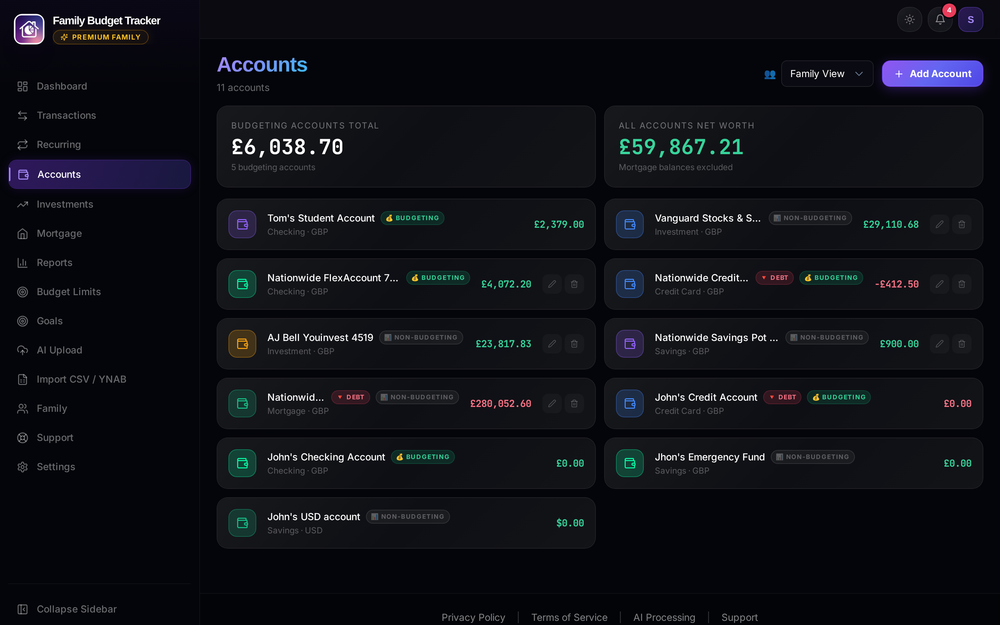
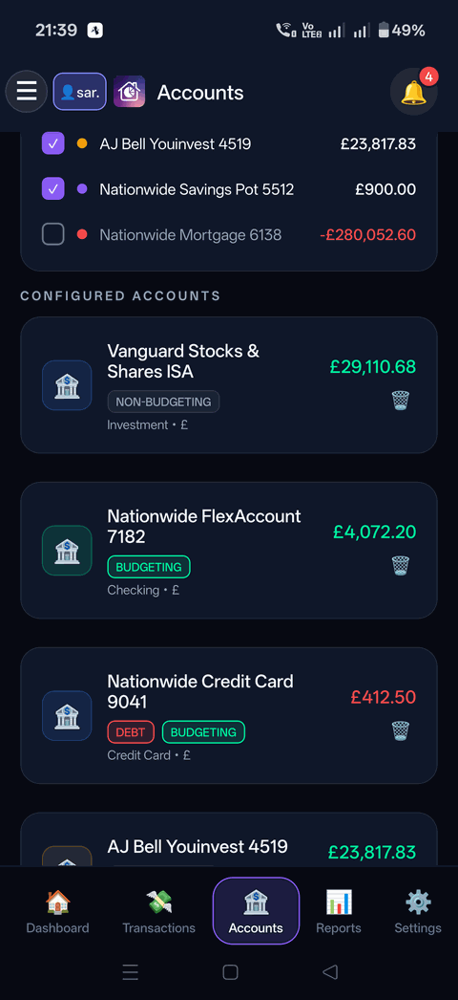
What It Does
- Manages liquid bank accounts alongside non-budgeting assets (Mortgages, ISAs, SIPPs).
- Displays running balances, ownership badges, and multi-currency conversions.
- Collapsible account groups for clear liquid vs non-liquid separation.
How It Works Under the Hood
Non-budgeting accounts (such as mortgages and long-term investments) are isolated so their large balances do not distort the liquid daily Safe to Spend formula.
How to Configure & Use
- Click/tap + Add Account to create a new account.
- Toggle "Include in Budgeting" depending on whether the funds represent daily spending cash.
- Assign account ownership to a specific family member or the shared household.
4. Financial Reports & Analytics
Visual cash flow analytics, category distribution charts, and burn velocity comparisons.
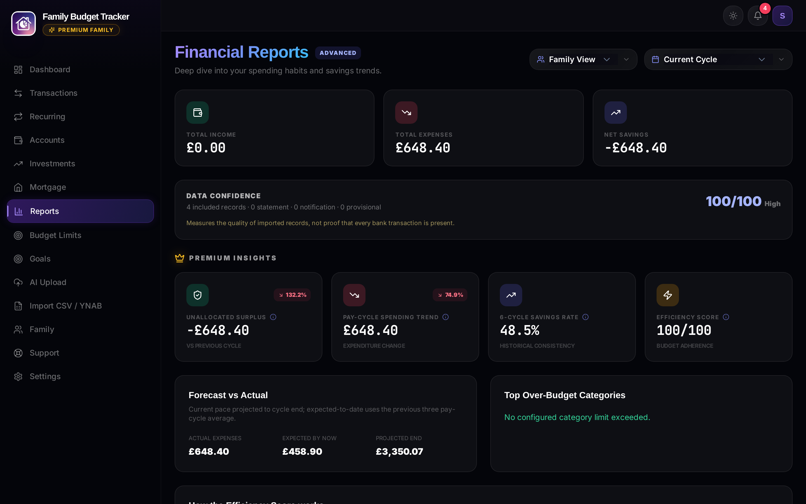
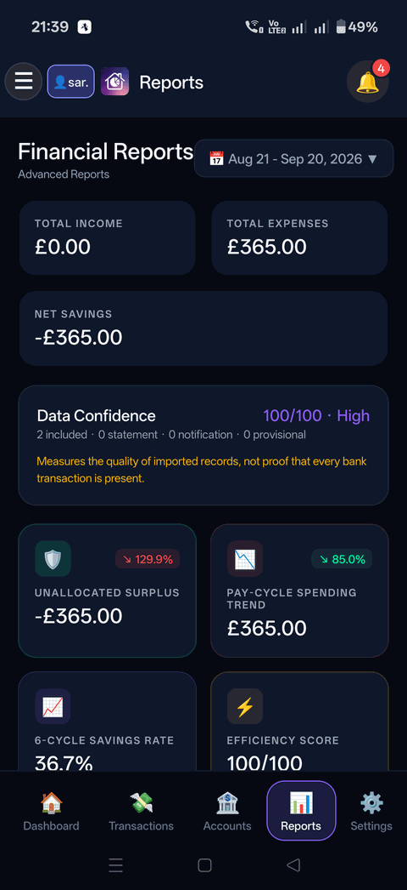
What It Does
- Income vs Expense comparative cash flow analysis.
- Interactive category breakdown charts revealing where household money goes.
- Pay cycle comparisons showing month-over-month savings velocity.
How It Works Under the Hood
Web renders responsive SVG charts while Mobile delivers hardware-accelerated interactive charts. Aggregations calculate on the fly across selected date intervals without UI lag.
How to Configure & Use
- Select a pay cycle or custom date interval from the top period dropdown.
- Click or tap on individual category bars to drill down into itemized historical expenses.
5. Settings, Security & Biometrics
Biometric security app lock, bank notification listener manager, and system preferences.
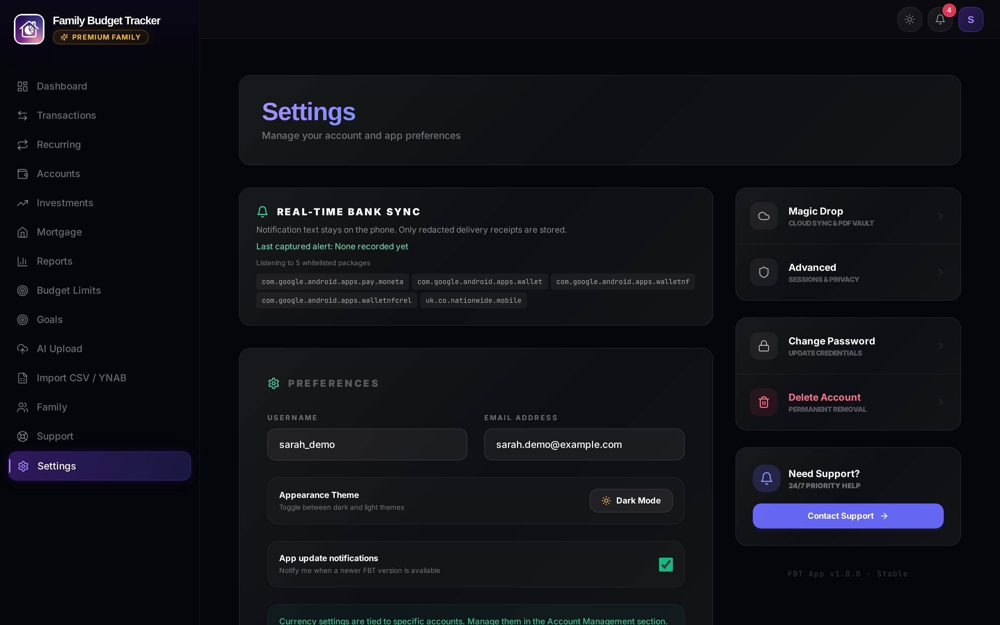

What It Does
- Native fingerprint / Face ID biometric app lock enforced on launch and resume.
- Bank notification capture: Optional processing of eligible alerts from bank and Wallet packages selected in Settings.
- Listener Transparency: Package allowlisting, capture status, local review controls, and privacy-safe diagnostics.
- Pay cycle frequency configuration, currency selector, and audit export.
How It Works Under the Hood
Uses expo-local-authentication for biometrics and a native Android NotificationListenerService. Alerts without a currency-qualified amount stay on the device. Eligible alert details are sent securely to Family Budget Tracker and may be processed once by Google Gemini. Only confirmed posted transactions create ledger rows.
How to Configure & Use
- Toggle "Biometric Lock" on mobile to require fingerprint/face scan.
- Under Connected Services & Alerts, toggle "Real-time bank sync" and grant notification access.
- Expand "Listener transparency" to inspect active package allowlists, audit the last captured alert, or add custom bank package IDs (e.g.
com.yourbank.app).
6. Smart Mortgage Hub & Rate Solver
Interactive loan amortization curve, itemized payment ledger, and reverse-engineering rate solver.
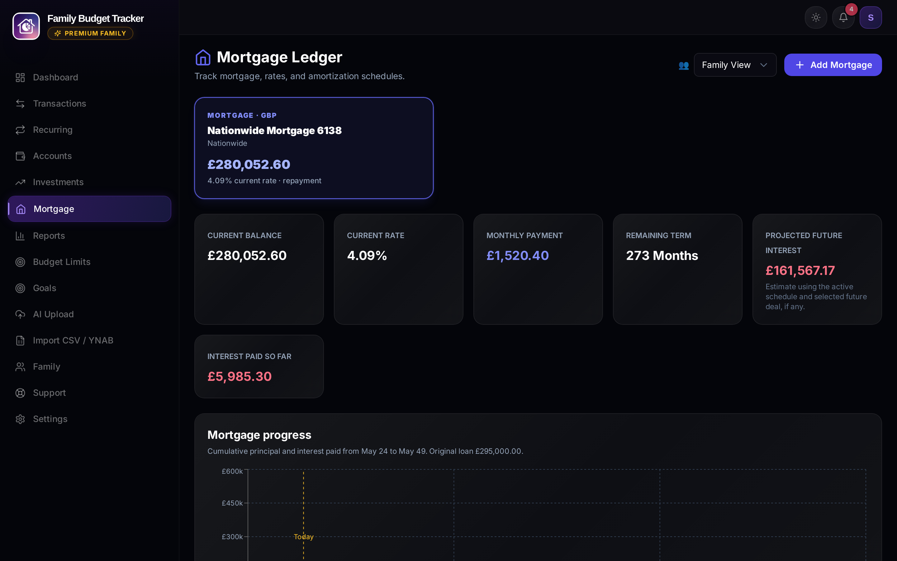

What It Does
- Interactive payoff timeline with touchable amortization points.
- Statement Activities displaying principal components, interest charges, and running balances.
- In-app live remortgage deal discovery and overpayment simulator.
How It Works Under the Hood
Eligible repayments from budgeting accounts remain ordinary expenses and can also create provisional mortgage activity. When a matching payment changes, the amortisation engine can infer an annual rate from (Balance, Remaining Term, Monthly Payment). Uploaded mortgage statements remain authoritative, and extracted facts are presented for review before application.
How to Configure & Use
- Open Mortgage from the side menu.
- Expand Statement Activities to inspect itemized payment rows.
- Tap along the curve to simulate payoff acceleration and interest savings.
7. Investment Portfolio & Ticker Sync
Multi-broker portfolio tracking across Vanguard, AJ Bell, and international investment platforms with automated market pricing.
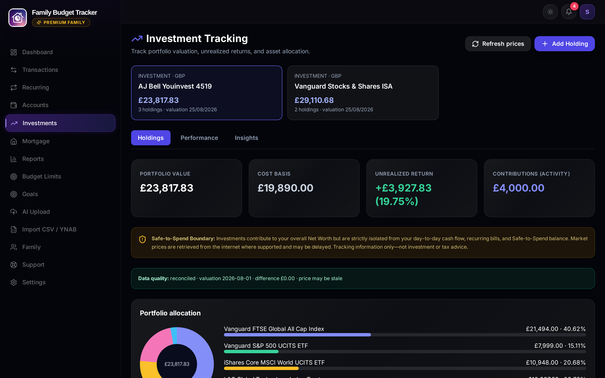
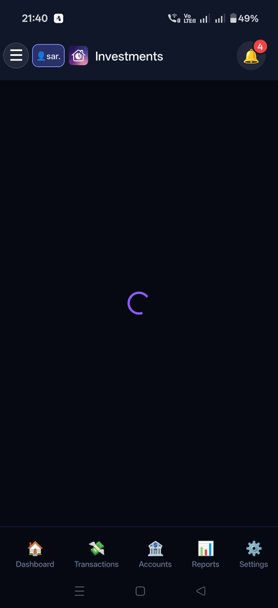
What It Does
- Holdings Tab: Individual funds, shares, unit costs, live market prices, and current valuations.
- Performance Tab: Interactive quarterly portfolio valuation growth curve and time-weighted return tracking.
- Insights Tab: Asset class distribution (Equities, Bonds, Cash) and geographic market exposure.
Multi-Currency Multiples & Valuation Rationale
The investment engine normalizes supported quote denominations and currencies before calculating current values:
- Minor-to-Major Currency Scaling Multiples (Pence to Pounds / GBX → GBP): Many UK equities, funds, and investment trusts trade and quote on the London Stock Exchange in pence (
GBp/GBX) rather than pounds. The pricing engine automatically detects pence denominations and applies a decimal scaling multiple of÷ 100(0.01x).
Rationale: Without the decimal scaling multiple, a holding of 1,000 units in a fund quoted at 450 GBp (£4.50) would naively compute to £450,000 instead of £4,500, creating an erroneous 100× net worth distortion. - Cross-Currency FX Multipliers: For global holdings denominated in foreign currencies (e.g. US equities in USD, European index trackers in EUR), real-time foreign exchange conversion multiples convert asset market values into your family's base currency.
- Fractional units: Fractional quantities are multiplied by normalized quotes and rounded for display in the portfolio currency.
How It Works Under the Hood
A user-triggered refresh obtains available public market quotes and FX rates, with a three-hour cache. Unsupported, private, or ambiguous holdings keep their latest verified statement value. Statements remain the reconciliation source of truth.
How to Configure & Use
- Open Investments from the navigation menu.
- Switch between Holdings, Performance, and Insights tabs.
- Click or tap "Refresh Prices" to request available market quotes and currency conversion.
8. Physical vs Virtual Savings Goals
Dual-tier goal architecture distinguishing between bank-locked funds and budget envelopes.
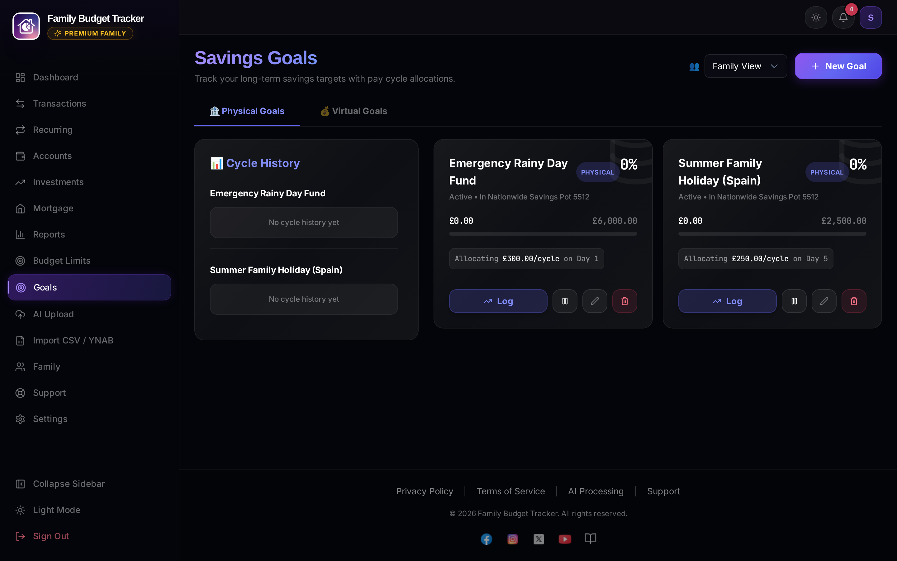
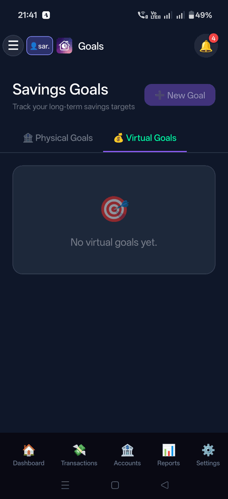
What It Does
- Physical Goals: Locked directly to real savings bank account balances (Emergency Fund, House Deposit).
- Virtual Goals: Category budget envelopes inside general checking accounts.
- Visual progress bars, target dates, and monthly savings calculators.
How It Works Under the Hood
Physical goals are linked to dedicated account balances. Virtual goals reserve money within the budgeting workflow. Review the selected source and target accounts before recording a contribution.
How to Configure & Use
- Open Goals from the menu.
- Click/tap + Create Goal, choose Physical or Virtual, and set your target amount and date.
9. Zero-Based Envelope Budgeting & Spending Ceilings
Transform your household finances from passive tracking to proactive cash allocation. Give every available pound a specific job before it is spent with cash-backed envelopes, automated credit card reservations, and multi-cycle target scheduling.
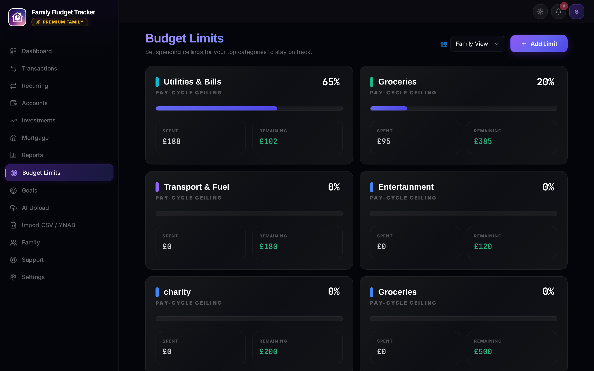

1. 🧭 The Product Model: "Track Only" vs "Envelope Budgeting"
Family Budget Tracker supports two distinct budgeting workflows, allowing you to choose the exact level of financial structure you need:
- Track Only Mode (Default): Pure transaction and cash-flow tracking. You monitor your central Safe to Spend gauge, track recurring bills, and set lightweight Category Budget Limits as spending ceilings without having to assign every pound.
- Zero-Based Envelope Planning (Active): A complete cash-backed envelope accounting system. Every pound currently in your checking and liquid cash accounts is explicitly assigned to an envelope until Ready to Assign is exactly £0.00.
Confirmed Budgeting Cash = Ready to Assign + ∑ (All Envelope Available Balances)Envelope Available = Carry-in + Assigned + Transaction Activity + Moved In − Moved Out
Note: "Zero-Based" does not mean your bank account balance is zero or that you should spend all your money. It means zero money remains unassigned without a designated purpose.
2. 📂 The 5 Envelope Group Types
Envelopes are organized into 5 purpose-built functional groups:
- 💳 Everyday Spending: Variable day-to-day lifestyle categories (Groceries, Dining Out, Fuel, Entertainment, Shopping). Categorized transactions create real-time debit activity.
- 🗓️ Annual & Upcoming Bills: Scheduled or irregular lump-sum commitments (Car Insurance, Road Tax, MOT, Boiler Service, School Fees, Christmas, Holiday Season). Multi-cycle targets break massive annual bills into manageable pay-cycle assignments.
- 🎯 Savings Goals: Long-term cash reservations (Emergency Fund, House Deposit, Wedding, Future Purchases). Money remains safely protected in your budgeting accounts or physical savings accounts.
- 💳 Credit Card Payment Envelopes: System-managed envelopes that automatically reserve checking cash to pay off credit card balances as purchases occur.
- 🛡️ Buffers: Dedicated safety reserves (Emergency Buffer, Next Cycle Pay Buffer) ensuring you never accidentally dip into next month's funds.
3. 🎯 5 Intelligent Target Scheduling Types
Targets provide smart funding suggestions each pay cycle without creating fake transactions or locking money involuntarily:
- 1. Set aside per cycle: Suggests assigning a fixed, recurring amount every pay cycle (e.g. £150 every cycle for Groceries).
- 2. Refill to amount: Smart top-up target that only requests enough money to restore the envelope back to a target ceiling (e.g. Refill Dining Out to £200—if £70 remained from last cycle, it only asks for £130).
- 3. Have amount by date: Calculates the exact amount required across remaining pay cycles before a target deadline:
Required per Cycle = max(0, Target Amount − Available Amount) ÷ Remaining Pay Cycles
Example: £1,200 Car Insurance due in 6 cycles suggests exactly £200 per cycle. - 4. Recurring due date: Automatically rolls forward to the next annual or monthly period once funded or spent (e.g. Annual MOT every August).
- 5. No target: Flexible manual envelope funded on an ad-hoc basis.
4. 💳 Credit Card Automatic Cash Reservation Engine
Family Budget Tracker solves credit card debt by keeping credit purchases 100% cash-backed in real time:
- Funded Card Purchase: When you buy £60 of Groceries with your credit card, £60 is deducted from your Groceries envelope and automatically moved to your Credit Card Payment envelope.
- Cash Integrity: Your checking account cash remains untouched until you actually pay the credit card bill.
- Paying the Card: Making a credit card payment is recorded as an internal transfer from checking to your credit card account. This simultaneously reduces your Card Payment envelope availability and credit card liability—without recording a second duplicate expense.
- Unfunded Overspending Warning: If you spend on a credit card in a category with insufficient funds, the envelope turns red and flags unfunded debt, prompting you to reassign cash to cover the balance.
5. 🔄 Overspending, Rollover & Negative Balances
- Positive Balances: Any unspent funds in an envelope automatically roll over into the next pay cycle as positive carry-in available funds.
- Cash Overspending: If you overspend an envelope from a checking account, the negative balance directly reduces your Ready to Assign pool in the subsequent cycle, ensuring your budget remains mathematically sound.
- Quick Money Movement: Tap "Move Money" on any envelope to shift available funds between categories with 1 tap and 0 bank friction.
6. 👨👩👧👦 Shared Family Envelopes & Many-to-One Category Mappings
For households utilizing Premium Family sharing, the envelope budgeting engine provides unified clarity without administrative headache:
- One Shared Family Scope per Currency: The entire household shares a single unified Ready to Assign and envelope availability pool per currency.
- Many-to-One Category Mappings: Multiple family members' personal categories (e.g. Sarah's Groceries and John's Groceries) seamlessly map into a single shared household Groceries envelope. Transactions preserve individual user ownership while ledger activity reconciles to the family envelope.
- Family Member Lens: Switch between
👥 All Membersor an individual member to inspect activity. The filter does not change Ready to Assign, Assigned, Available, targets, suggestions, or cycle balances. - Role-Based Allocation Permissions: Owners and admins manage setup, migration, envelopes, targets, and lifecycle. Members may assign, unassign, and move money. Viewers are read-only.
7. ⚡ Controlled 1-Click Migration & Reversible Switching
- 1-Click Migration Preview: If you have existing Category Budget Limits and Savings Goals, the app generates a deterministic migration preview that converts limits into envelope targets and reserves without writing a single permanent row until you confirm.
- Reversible Pause & Resume: You can pause Envelope Budgeting at any time to return to lightweight Track Only mode. Pausing preserves all allocations, targets, and history intact, allowing you to resume whenever you are ready.
10. Recurring Payments & Subscriptions
Subscription and bill manager with predictive auto-deduction math.
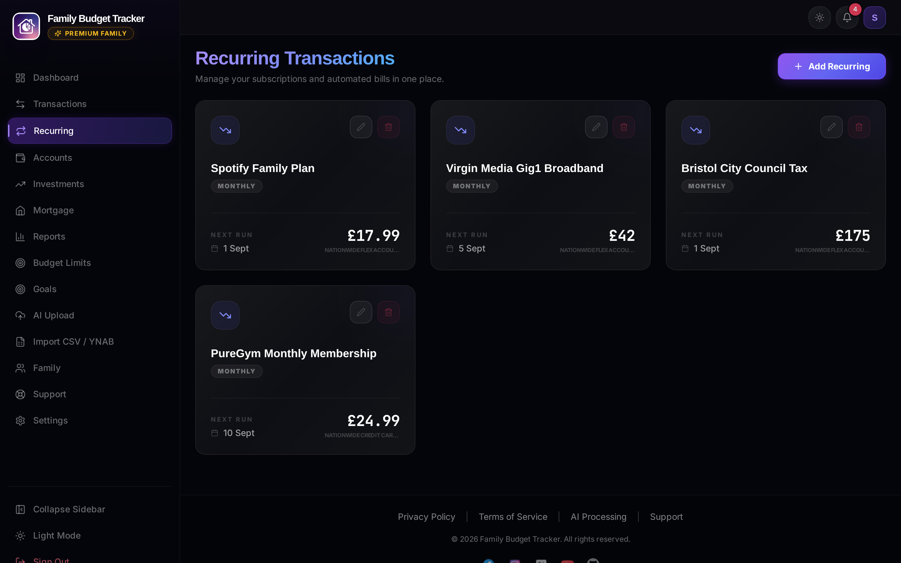
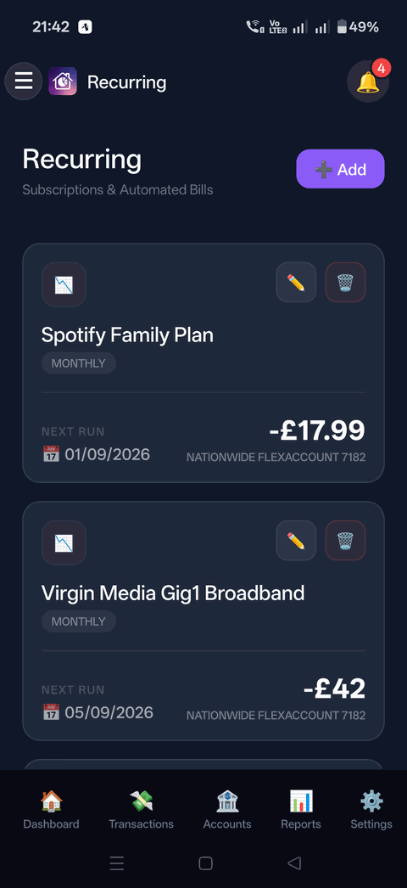
What It Does
- Tracks regular subscriptions, utilities, council tax, gym, and broadband contracts.
- Displays next billing date, monthly cadence, payment account, and active status.
How It Works Under the Hood
Upcoming recurring bills within the active pay cycle are automatically reserved from Safe to Spend. When debits clear, bills are automatically marked as paid.
How to Configure & Use
- Open Recurring from the navigation menu.
- Add subscriptions with their billing cadence (Monthly, Annual, Weekly).
11. AI Statement Vault (Magic Drop)
Zero-bank-login PDF statement extraction with multimodal AI and privacy redaction.
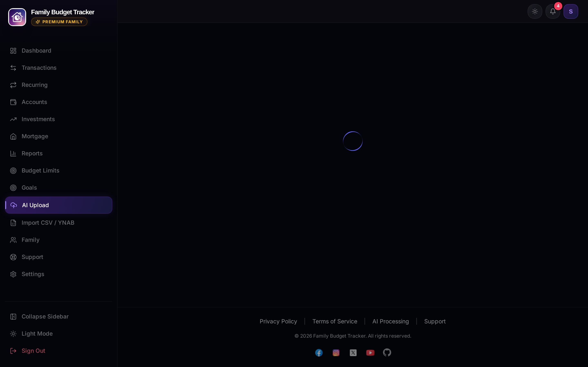
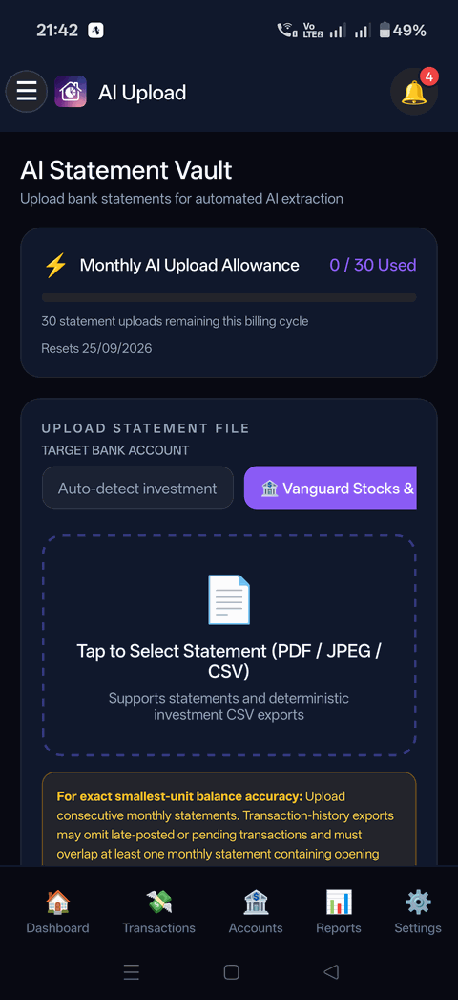
What It Does
- Drag-and-drop dropzone for Bank, Credit, Mortgage, and Investment PDF statements.
- Extraction confidence indicators and review controls before ledger confirmation.
- Multi-account PDF detection (splits combined statements into isolated ledgers).
How to Configure & Use
- Open AI Upload from the menu.
- Drop any PDF statement or forward via Gmail Magic Drop automation.
12. Data Import Engine (CSV & YNAB)
Fast migration tool for CSV spreadsheets and YNAB export archives.
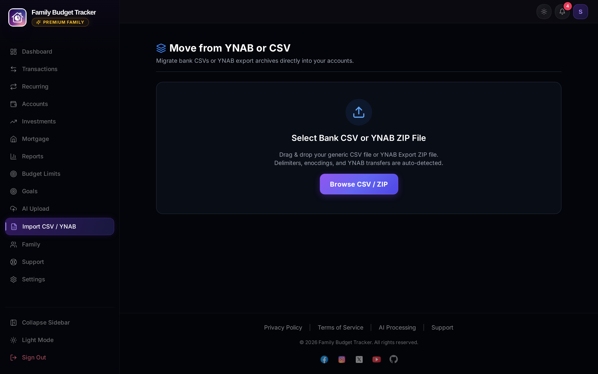
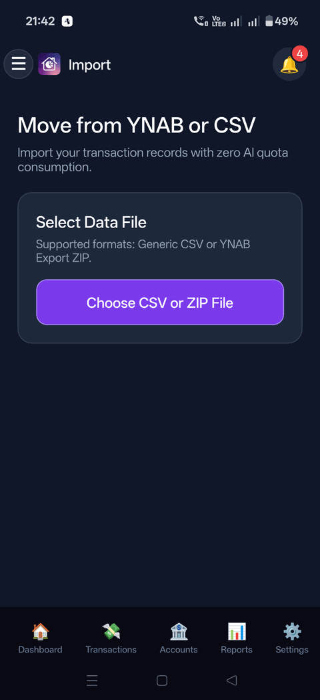
What It Does
- Imports historical data from YNAB register archives or standard bank CSV files.
- Visual column mapping interface with automatic duplicate detection.
How to Configure & Use
- Open Import CSV / YNAB from the navigation menu.
- Upload your export file, verify column mappings, and import.
13. Family Collaboration & Member Roles
Shared household budgeting workspace supporting up to 5 family members.
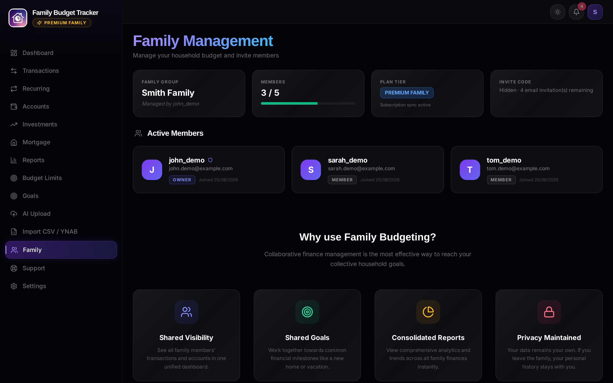
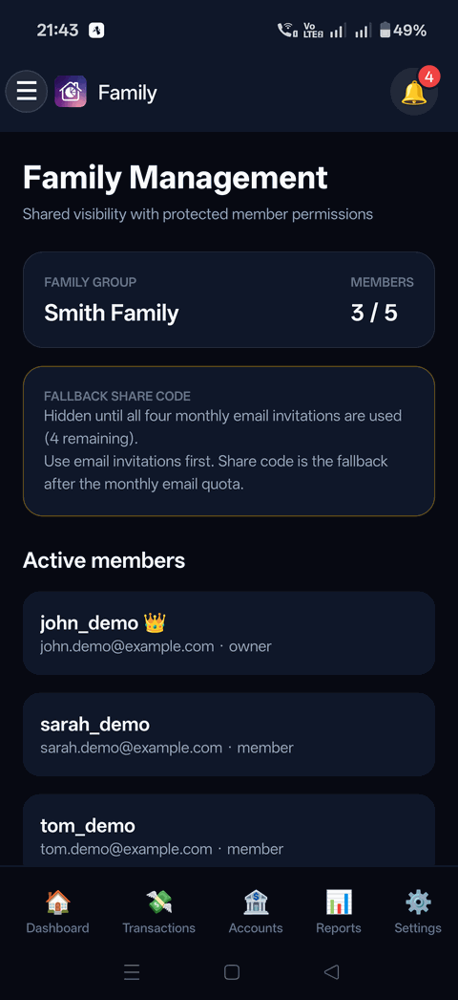
What It Does
- Household member administration with Owner and Member role permissions.
- Generates family invite tokens for instant partner onboarding.
- Provides individual activity filters alongside authoritative shared household totals.
How to Configure & Use
- Open Family Management from the navigation menu.
- Copy and share the generated Family Invite Code with family members.
14. In-App Notification Center
Clean notification feed for system updates, goal alerts, and rate changes.
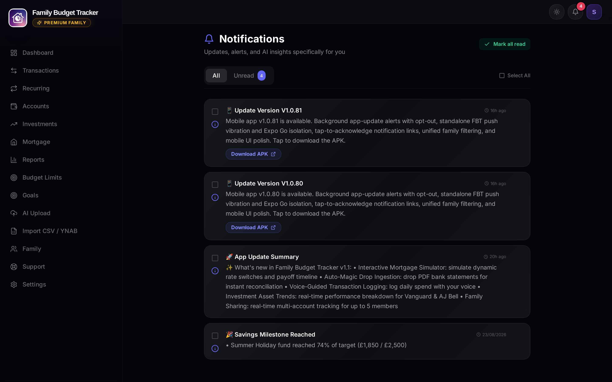
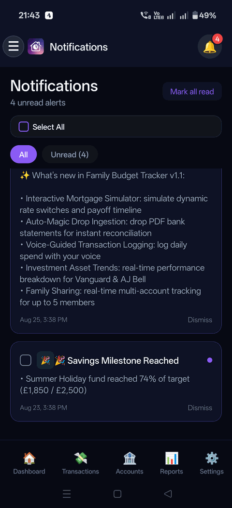
What It Does
- In-app alert feed with unread badge counter on the header bell icon.
- Structured release notices, savings milestone notifications, and mortgage alerts.
How to Configure & Use
- Click or tap the Bell Icon (🔔) in the top-right header from any screen.
- Select "Mark All as Read" or tap individual notices to dismiss.